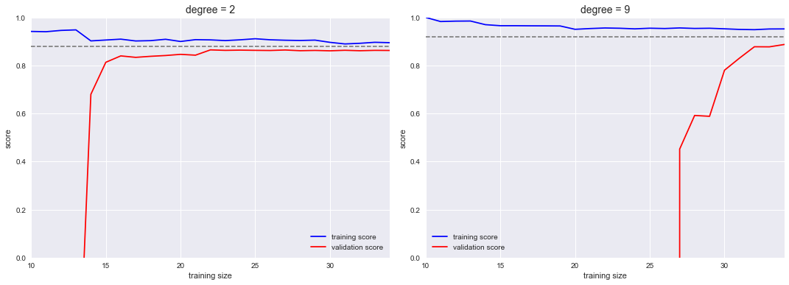

In [5]:
import numpy as np
from sklearn import metrics
import pandas as pd
from sklearn import datasets
from IPython.display import display
import matplotlib.pyplot as plt
import seaborn as sns
%matplotlib inline
In [3]:
y = np.array([1, 1, 2, 2])
pred = np.array([0.1, 0.4, 0.35, 0.8])
fpr, tpr, thresholds = metrics.roc_curve(y, pred, pos_label=2)
In [4]:
fpr
Out[4]:
array([ 0. , 0.5, 0.5, 1. ])
In [5]:
tpr
Out[5]:
array([ 0.5, 0.5, 1. , 1. ])
In [6]:
thresholds
Out[6]:
array([ 0.8 , 0.4 , 0.35, 0.1 ])
In [7]:
metrics.auc(fpr, tpr)
Out[7]:
0.75
In [ ]:
In [8]:
titanic = sns.load_dataset("titanic")
titanic = titanic.select_dtypes(include=["number"])
titanic.age = titanic.age.fillna(titanic.age.mean())
titanic.info()
<class 'pandas.core.frame.DataFrame'>
RangeIndex: 891 entries, 0 to 890
Data columns (total 6 columns):
survived 891 non-null int64
pclass 891 non-null int64
age 891 non-null float64
sibsp 891 non-null int64
parch 891 non-null int64
fare 891 non-null float64
dtypes: float64(2), int64(4)
memory usage: 41.8 KB
In [10]:
titanic_features = titanic.drop("survived", axis=1)
titanic_target = titanic.survived
In [59]:
from sklearn import linear_model
from sklearn import model_selection
from sklearn import metrics
X_train, X_test, y_train, y_test = model_selection.train_test_split(titanic_features, titanic_target, test_size=0.3)
t_lr = linear_model.LogisticRegression().fit(X_train, y_train)
proba = t_lr.predict_proba(X_test)
predict = t_lr.predict(X_test)
fpr, tpr, thresholds = metrics.roc_curve(y_test, proba[:, 1])
metrics.auc(fpr, tpr), metrics.roc_auc_score(y_test, proba[:, 1])
Out[59]:
(0.72904761904761894, 0.72904761904761894)
In [124]:
X_train.shape, X_test.shape
Out[124]:
((623, 5), (268, 5))
In [60]:
t_lr.classes_
Out[60]:
array([0, 1])
In [123]:
(proba[:, 1] > 0.5).sum(), proba.shape
Out[123]:
(59, (268, 2))
In [62]:
fpr.shape, tpr.shape, thresholds.shape
Out[62]:
((109,), (109,), (109,))
In [125]:
_fpr, _tpr, _thresholds = metrics.roc_curve(y_test, proba[:, 1], drop_intermediate=False)
_fpr.shape, _tpr.shape, _thresholds.shape, proba.shape[0] - _fpr.shape[0]
Out[125]:
((237,), (237,), (237,), 31)
In [113]:
plt.plot(fpr)
plt.plot(tpr)
plt.plot(thresholds)
Out[113]:
[<matplotlib.lines.Line2D at 0x1161aad68>]

In [120]:
plt.plot(_fpr)
plt.plot(_tpr)
plt.plot(_thresholds)
Out[120]:
[<matplotlib.lines.Line2D at 0x116310e10>]

In [305]:
np.where(np.r_[True,False,True, np.logical_or([1,0,2], [0,1,1])])
Out[305]:
(array([0, 2, 3, 4, 5]),)
In [307]:
# 縦軸にTrue Positive、横軸にFalse Positiveの割合
roc_df = pd.DataFrame(np.c_[y_test, proba[:, 1], proba[:, 1] > 0.5])
roc_df.columns = ["y", "proba", "pred"]
roc_df = roc_df.sort_values("proba", ascending=False).reset_index()
roc_df["proba_diff"] = roc_df["proba"].diff()
#roc_df = roc_df.dropna()
roc_df = roc_df[roc_df["proba_diff"] != 0].reset_index(drop=True)
roc_df["tps"] = roc_df["y"].cumsum()
roc_df["fps"] = 1 + roc_df.index - roc_df["tps"]
roc_df["fps_diff"] = roc_df["fps"].diff().diff().shift(-1).fillna(1)
roc_df["tps_diff"] = roc_df["tps"].diff().diff().shift(-1).fillna(1)
roc_df["ps_diff_0"] = (roc_df["fps_diff"] != 0) | (roc_df["fps_diff"] != 0)
drop_intermediate = True
if drop_intermediate and len(roc_df["fps"]) > 2:
roc_df = roc_df[roc_df["ps_diff_0"]].reset_index(drop=True)
else:
roc_df["_fpr"] = _fpr
roc_df["_tpr"] = _tpr
roc_df["tps_norm"] = roc_df["tps"] / roc_df["tps"].max()
roc_df["fps_norm"] = roc_df["fps"] / roc_df["fps"].max()
roc_df
#roc_df.plot(x="fps_norm", y="tps_norm"); plt.plot([0,1], [0,1])
Out[307]:
| index | y | proba | pred | proba_diff | tps | fps | fps_diff | tps_diff | ps_diff_0 | tps_norm | fps_norm | |
|---|---|---|---|---|---|---|---|---|---|---|---|---|
| 0 | 99 | 1.0 | 0.932104 | 1.0 | NaN | 1.0 | 0.0 | 1.0 | 1.0 | True | 0.010753 | 0.000000 |
| 1 | 98 | 1.0 | 0.926251 | 1.0 | -0.005853 | 2.0 | 0.0 | 1.0 | -1.0 | True | 0.021505 | 0.000000 |
| 2 | 93 | 0.0 | 0.872601 | 1.0 | -0.033082 | 2.0 | 2.0 | -1.0 | 1.0 | True | 0.021505 | 0.013889 |
| 3 | 257 | 1.0 | 0.714187 | 1.0 | -0.002086 | 18.0 | 2.0 | 1.0 | -1.0 | True | 0.193548 | 0.013889 |
| 4 | 189 | 0.0 | 0.711957 | 1.0 | -0.002230 | 18.0 | 3.0 | -1.0 | 1.0 | True | 0.193548 | 0.020833 |
| 5 | 104 | 1.0 | 0.675602 | 1.0 | -0.022820 | 22.0 | 3.0 | 1.0 | -1.0 | True | 0.236559 | 0.020833 |
| 6 | 163 | 0.0 | 0.661268 | 1.0 | -0.014334 | 22.0 | 4.0 | -1.0 | 1.0 | True | 0.236559 | 0.027778 |
| 7 | 77 | 1.0 | 0.655571 | 1.0 | -0.005697 | 23.0 | 4.0 | 1.0 | -1.0 | True | 0.247312 | 0.027778 |
| 8 | 222 | 0.0 | 0.649628 | 1.0 | -0.000305 | 23.0 | 7.0 | -1.0 | 1.0 | True | 0.247312 | 0.048611 |
| 9 | 182 | 1.0 | 0.647242 | 1.0 | -0.001402 | 25.0 | 7.0 | 1.0 | -1.0 | True | 0.268817 | 0.048611 |
| 10 | 44 | 0.0 | 0.646640 | 1.0 | -0.000602 | 25.0 | 8.0 | -1.0 | 1.0 | True | 0.268817 | 0.055556 |
| 11 | 61 | 1.0 | 0.622325 | 1.0 | -0.001325 | 27.0 | 8.0 | 1.0 | -1.0 | True | 0.290323 | 0.055556 |
| 12 | 195 | 0.0 | 0.611768 | 1.0 | -0.010557 | 27.0 | 9.0 | -1.0 | 1.0 | True | 0.290323 | 0.062500 |
| 13 | 33 | 1.0 | 0.610921 | 1.0 | -0.000847 | 28.0 | 9.0 | 1.0 | -1.0 | True | 0.301075 | 0.062500 |
| 14 | 186 | 0.0 | 0.601489 | 1.0 | -0.009432 | 28.0 | 10.0 | -1.0 | 1.0 | True | 0.301075 | 0.069444 |
| 15 | 51 | 1.0 | 0.579769 | 1.0 | -0.008188 | 32.0 | 10.0 | 1.0 | -1.0 | True | 0.344086 | 0.069444 |
| 16 | 31 | 0.0 | 0.578852 | 1.0 | -0.000917 | 32.0 | 11.0 | -1.0 | 1.0 | True | 0.344086 | 0.076389 |
| 17 | 229 | 1.0 | 0.542517 | 1.0 | -0.001301 | 36.0 | 11.0 | 1.0 | -1.0 | True | 0.387097 | 0.076389 |
| 18 | 187 | 0.0 | 0.542236 | 1.0 | -0.000281 | 36.0 | 12.0 | -1.0 | 1.0 | True | 0.387097 | 0.083333 |
| 19 | 264 | 1.0 | 0.540829 | 1.0 | -0.001406 | 37.0 | 12.0 | 1.0 | -1.0 | True | 0.397849 | 0.083333 |
| 20 | 227 | 0.0 | 0.540596 | 1.0 | -0.000234 | 37.0 | 13.0 | -1.0 | 1.0 | True | 0.397849 | 0.090278 |
| 21 | 190 | 1.0 | 0.528790 | 1.0 | -0.000949 | 40.0 | 13.0 | 1.0 | -1.0 | True | 0.430108 | 0.090278 |
| 22 | 96 | 0.0 | 0.521248 | 1.0 | -0.007542 | 40.0 | 14.0 | -1.0 | 1.0 | True | 0.430108 | 0.097222 |
| 23 | 4 | 1.0 | 0.520023 | 1.0 | -0.001225 | 41.0 | 14.0 | 1.0 | -1.0 | True | 0.440860 | 0.097222 |
| 24 | 220 | 0.0 | 0.519490 | 1.0 | -0.000532 | 41.0 | 15.0 | -1.0 | 1.0 | True | 0.440860 | 0.104167 |
| 25 | 78 | 1.0 | 0.499988 | 0.0 | -0.004243 | 43.0 | 15.0 | 1.0 | -1.0 | True | 0.462366 | 0.104167 |
| 26 | 237 | 0.0 | 0.488286 | 0.0 | -0.001619 | 43.0 | 19.0 | -1.0 | 1.0 | True | 0.462366 | 0.131944 |
| 27 | 204 | 1.0 | 0.486151 | 0.0 | -0.002135 | 44.0 | 19.0 | 1.0 | -1.0 | True | 0.473118 | 0.131944 |
| 28 | 232 | 0.0 | 0.454173 | 0.0 | -0.009898 | 44.0 | 25.0 | -1.0 | 1.0 | True | 0.473118 | 0.173611 |
| 29 | 217 | 1.0 | 0.444851 | 0.0 | -0.009322 | 45.0 | 25.0 | 1.0 | -1.0 | True | 0.483871 | 0.173611 |
| ... | ... | ... | ... | ... | ... | ... | ... | ... | ... | ... | ... | ... |
| 65 | 166 | 1.0 | 0.265476 | 0.0 | -0.011778 | 76.0 | 80.0 | 1.0 | -1.0 | True | 0.817204 | 0.555556 |
| 66 | 152 | 0.0 | 0.264115 | 0.0 | -0.001362 | 76.0 | 81.0 | -1.0 | 1.0 | True | 0.817204 | 0.562500 |
| 67 | 75 | 1.0 | 0.262040 | 0.0 | -0.002075 | 77.0 | 81.0 | 1.0 | -1.0 | True | 0.827957 | 0.562500 |
| 68 | 141 | 0.0 | 0.250243 | 0.0 | -0.002058 | 77.0 | 88.0 | -1.0 | 1.0 | True | 0.827957 | 0.611111 |
| 69 | 169 | 1.0 | 0.250230 | 0.0 | -0.000013 | 78.0 | 88.0 | 1.0 | -1.0 | True | 0.838710 | 0.611111 |
| 70 | 11 | 0.0 | 0.242056 | 0.0 | -0.000125 | 78.0 | 92.0 | -1.0 | 1.0 | True | 0.838710 | 0.638889 |
| 71 | 83 | 1.0 | 0.242043 | 0.0 | -0.000013 | 79.0 | 92.0 | 1.0 | -1.0 | True | 0.849462 | 0.638889 |
| 72 | 7 | 0.0 | 0.242003 | 0.0 | -0.000040 | 79.0 | 93.0 | -1.0 | 1.0 | True | 0.849462 | 0.645833 |
| 73 | 258 | 1.0 | 0.241959 | 0.0 | -0.000044 | 80.0 | 93.0 | 1.0 | -1.0 | True | 0.860215 | 0.645833 |
| 74 | 25 | 0.0 | 0.241939 | 0.0 | -0.000020 | 80.0 | 94.0 | -1.0 | 1.0 | True | 0.860215 | 0.652778 |
| 75 | 107 | 1.0 | 0.241929 | 0.0 | -0.000010 | 81.0 | 94.0 | 1.0 | -1.0 | True | 0.870968 | 0.652778 |
| 76 | 8 | 0.0 | 0.236222 | 0.0 | -0.000238 | 81.0 | 103.0 | -1.0 | 1.0 | True | 0.870968 | 0.715278 |
| 77 | 225 | 1.0 | 0.233435 | 0.0 | -0.000078 | 83.0 | 103.0 | 1.0 | -1.0 | True | 0.892473 | 0.715278 |
| 78 | 191 | 0.0 | 0.232782 | 0.0 | -0.000653 | 83.0 | 104.0 | -1.0 | 1.0 | True | 0.892473 | 0.722222 |
| 79 | 0 | 1.0 | 0.229373 | 0.0 | -0.003409 | 84.0 | 104.0 | 1.0 | -1.0 | True | 0.903226 | 0.722222 |
| 80 | 221 | 0.0 | 0.225902 | 0.0 | -0.003471 | 84.0 | 105.0 | -1.0 | 1.0 | True | 0.903226 | 0.729167 |
| 81 | 245 | 1.0 | 0.224496 | 0.0 | -0.001351 | 86.0 | 105.0 | 1.0 | -1.0 | True | 0.924731 | 0.729167 |
| 82 | 43 | 0.0 | 0.220303 | 0.0 | -0.000726 | 86.0 | 107.0 | -1.0 | 1.0 | True | 0.924731 | 0.743056 |
| 83 | 192 | 1.0 | 0.219365 | 0.0 | -0.000938 | 87.0 | 107.0 | 1.0 | -1.0 | True | 0.935484 | 0.743056 |
| 84 | 50 | 0.0 | 0.219000 | 0.0 | -0.000091 | 87.0 | 110.0 | -1.0 | 1.0 | True | 0.935484 | 0.763889 |
| 85 | 254 | 1.0 | 0.214019 | 0.0 | -0.004982 | 88.0 | 110.0 | 1.0 | -1.0 | True | 0.946237 | 0.763889 |
| 86 | 157 | 0.0 | 0.208116 | 0.0 | -0.000011 | 88.0 | 117.0 | -1.0 | 1.0 | True | 0.946237 | 0.812500 |
| 87 | 162 | 1.0 | 0.207681 | 0.0 | -0.000435 | 89.0 | 117.0 | 1.0 | -1.0 | True | 0.956989 | 0.812500 |
| 88 | 60 | 0.0 | 0.183371 | 0.0 | -0.005874 | 89.0 | 129.0 | -1.0 | 1.0 | True | 0.956989 | 0.895833 |
| 89 | 260 | 1.0 | 0.177140 | 0.0 | -0.006231 | 90.0 | 129.0 | 1.0 | -1.0 | True | 0.967742 | 0.895833 |
| 90 | 247 | 0.0 | 0.175714 | 0.0 | -0.001073 | 90.0 | 131.0 | -1.0 | 1.0 | True | 0.967742 | 0.909722 |
| 91 | 22 | 1.0 | 0.172461 | 0.0 | -0.003253 | 91.0 | 131.0 | 1.0 | -1.0 | True | 0.978495 | 0.909722 |
| 92 | 246 | 0.0 | 0.154211 | 0.0 | -0.004246 | 91.0 | 138.0 | -1.0 | 1.0 | True | 0.978495 | 0.958333 |
| 93 | 6 | 1.0 | 0.149162 | 0.0 | -0.004977 | 93.0 | 138.0 | 1.0 | -1.0 | True | 1.000000 | 0.958333 |
| 94 | 200 | 0.0 | 0.078597 | 0.0 | -0.006344 | 93.0 | 144.0 | 1.0 | 1.0 | True | 1.000000 | 1.000000 |
95 rows × 12 columns
In [154]:
## Confusion Matrix
confusion_matrix = metrics.confusion_matrix(y_test, predict)
print(confusion_matrix)
print(confusion_matrix/ confusion_matrix.sum())
PNTF_labels = np.array([["TP", "FP"], ["FN", "TN"]])
sns.heatmap(confusion_matrix, annot=PNTF_labels, fmt="") #annot=True)
confusion_s = pd.Series(confusion_matrix.flatten(), index=PNTF_labels.flatten())
confusion_s
[[152 16]
[ 57 43]]
[[ 0.56716418 0.05970149]
[ 0.21268657 0.16044776]]
Out[154]:
TP 152
FP 16
FN 57
TN 43
dtype: int64

In [153]:
confusion_matrix.flatten()
Out[153]:
array([152, 16, 57, 43])
xy xは予測した結果、正解/不正解(T/F) yは予測した結果が正解ならそのまま、不正解なら逆 Pは正例、Nは負例、
- TP
- TN
- FP
- FN
In [159]:
# ROC曲線は，分類器のパラメータを変化させながら，縦軸に TP/TP+FN，横軸に FP/FP+TN をとった曲線．
_cfs = confusion_s
[
_cfs["TP"] / (_cfs["TP"] + _cfs["FN"]), # 正解は正のうち、ただしく予測できた割合(再現率: recall)
_cfs["FP"] / (_cfs["FP"] + _cfs["TN"]), # 正解は負のうち、間違って予測した割合
_cfs["TP"] / (_cfs["TP"] + _cfs["FP"]), # 正と予測したデータのうち，実際に正であるものの割合（精度、適合率、Precsion）
(_cfs["TP"] + _cfs["TN"]) / _cfs.sum(), # 予測正解率
]
Out[159]:
[0.72727272727272729,
0.2711864406779661,
0.90476190476190477,
0.72761194029850751]
In [145]:
_cfmx.loc["T"].sum(), _cfmx.sum()
Out[145]:
(168, P 209
N 59
dtype: int64)
In [87]:
print(metrics.classification_report(y_test, predict))
precision recall f1-score support
0 0.73 0.90 0.81 168
1 0.73 0.43 0.54 100
avg / total 0.73 0.73 0.71 268
In [73]:
## ROC曲線
In [109]:
fig, (ax1, ax2) = plt.subplots(1, 2, figsize=(10, 5))
ax1.plot(fpr, tpr, [0,1],[0,1])
#plt.plot(tpr, fpr, [0,1],[0,1])
pd.Series(tpr, index=fpr).plot(ax=ax2)
pd.Series([-0.05, 0, 1, 1.05], index=[-0.05, 0,1, 1.05]).plot(ax=ax2)
Out[109]:
<matplotlib.axes._subplots.AxesSubplot at 0x115b73c88>

In [160]:
## 正解率
[
metrics.accuracy_score(y_test, predict),
(y_test == (proba[:, 1] > 0.5).astype(int)).sum() / y_test.shape[0]
]
Out[160]:
[0.72761194029850751, 0.72761194029850751]
In [8]:
# learning curve
# http://nbviewer.jupyter.org/github/jakevdp/PythonDataScienceHandbook/blob/master/notebooks/05.03-Hyperparameters-and-Model-Validation.ipynb
In [10]:
from sklearn.preprocessing import PolynomialFeatures
from sklearn.linear_model import LinearRegression
from sklearn.pipeline import make_pipeline
#from sklearn.learning_curve import learning_curve
from sklearn.model_selection import learning_curve
def PolynomialRegression(degree=2, **kwargs):
return make_pipeline(PolynomialFeatures(degree),
LinearRegression(**kwargs))
def make_data(N, err=1.0, rseed=1):
# randomly sample the data
rng = np.random.RandomState(rseed)
X = rng.rand(N, 1) ** 2
y = 10 - 1. / (X.ravel() + 0.1)
if err > 0:
y += err * rng.randn(N)
return X, y
X, y = make_data(40)
fig, axes = plt.subplots(1, 2, figsize=(16, 6))
fig.subplots_adjust(left=0.0625, right=0.95, wspace=0.1)
degrees = [2, 9]
for degree, ax in zip(degrees, axes):
N, train_lc, val_lc = learning_curve(PolynomialRegression(degree),
X, y, cv=7,
train_sizes=np.linspace(0.3, 1, 25))
ax.plot(N, np.mean(train_lc, 1), color='blue', label='training score')
ax.plot(N, np.mean(val_lc, 1), color='red', label='validation score')
ax.hlines(np.mean([train_lc[-1], val_lc[-1]]), N[0], N[-1],
color='gray', linestyle='dashed')
ax.set_ylim(0, 1)
ax.set_xlim(N[0], N[-1])
ax.set_xlabel('training size')
ax.set_ylabel('score')
ax.set_title('degree = {0}'.format(degree), size=14)
ax.legend(loc='best')

In [9]:
# validation curve
In [11]:
#from sklearn.learning_curve import validation_curve
from sklearn.model_selection import validation_curve
degree = np.arange(0, 21)
train_score, val_score = validation_curve(PolynomialRegression(), X, y,
'polynomialfeatures__degree', degree, cv=7)
plt.plot(degree, np.median(train_score, 1), color='blue', label='training score')
plt.plot(degree, np.median(val_score, 1), color='red', label='validation score')
plt.legend(loc='best')
plt.ylim(0, 1)
plt.xlabel('degree')
plt.ylabel('score');

In [ ]:
In [ ]:
In [ ]: